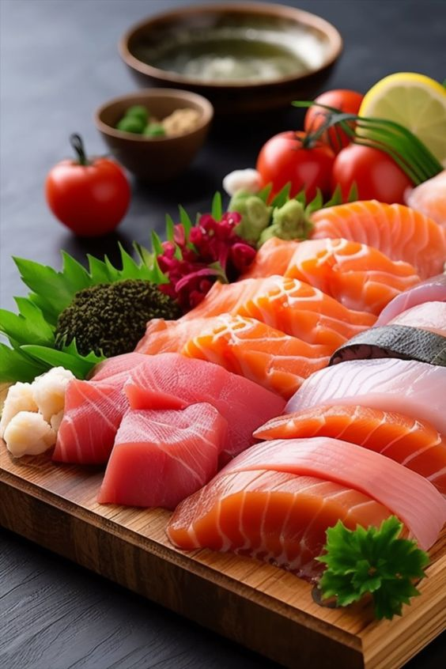
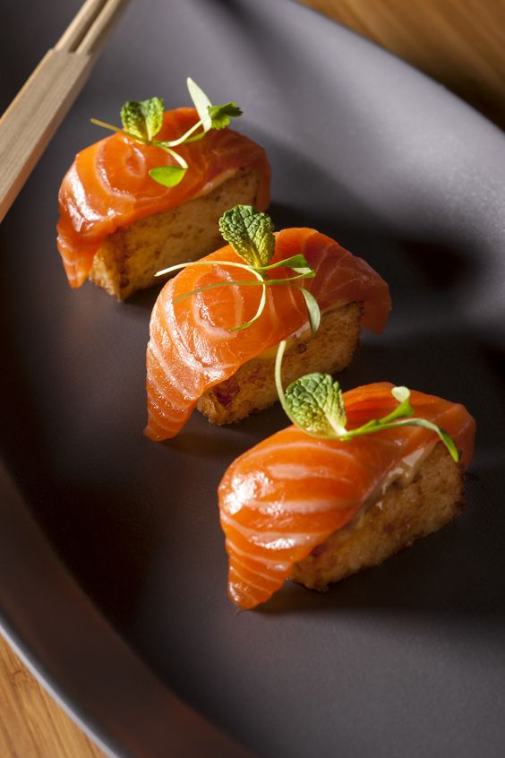
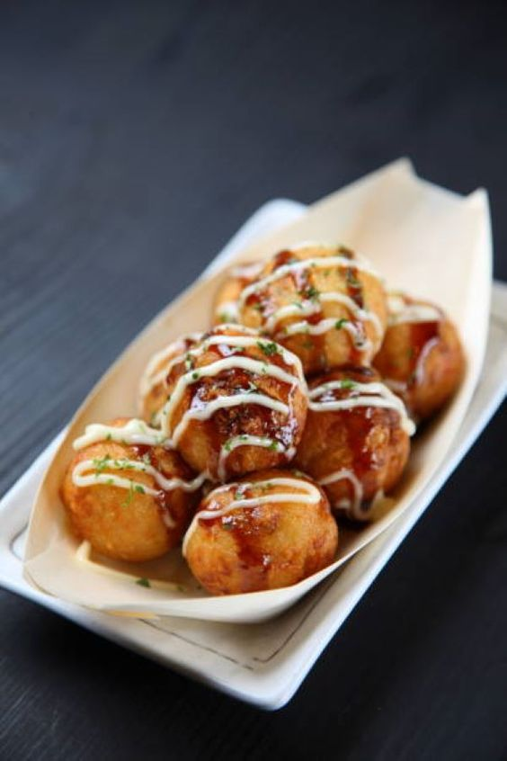

Rewiew phim
cơm cà ri Nhắc đến ẩm thực Nhật Bản thì không thể bỏ qua món cơm cà ri trứ danh. Món ăn có nguồn gốc từ Ấn Độ

shasimi Sashimi là món khai vị trong các bữa ăn trang trọng ở Nhật Bản. Nguyên liệu chính để chế biến món ăn là các loại hải sản tươi sống

sushi Sushi là món ăn truyền thống, biểu tượng của văn hoá ẩm thực Nhật Bản. Sushi là sự kết hợp giữa cơm trộn giấm, hải sản và các loại rau củ tươi.

takoyaki Takoyaki là món bánh bạch tuộc nướng, có nguồn gốc từ Osaka. Ẩn sâu bên trong lớp vỏ ngoài giòn tan là phần nhân tạch tuộc thơm ngon.